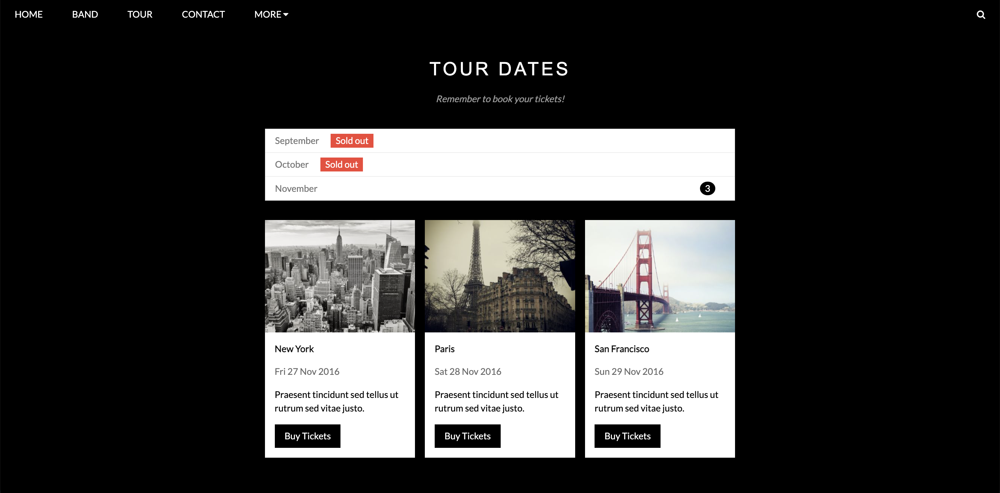
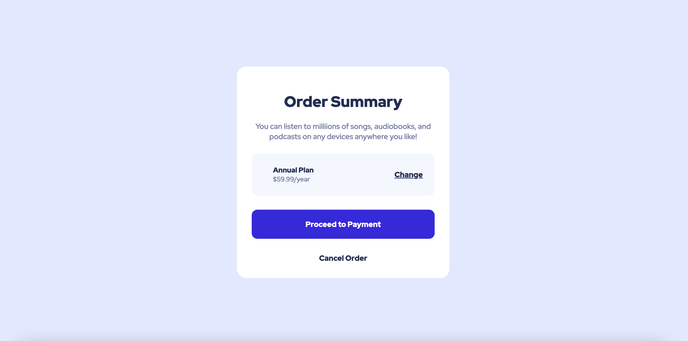

About Me
I am a passionate student with a strong interest in front-end development. Although I have limited professional experience, I am highly motivated to learn and grow in this field. I have completed several personal projects using HTML, CSS, and JavaScript to enhance my skills and showcase my abilities.
I have experience working with MySQL databases since I took the MIS 3123 - Database Design and Management course, where I gained hands-on experience with database design, implementation, and management using MySQL and Microsoft Access. I find the intersection of front-end development and database management fascinating and strive to create seamless user experiences with robust data functionality.
Projects
Project 1
Project 1 is a website based on the W3.CSS band template. It is a modern and visually appealing e-commerce website built with HTML, CSS, and JavaScript. The website showcases various features and elements such as responsive design, dynamic navigation menu, image sliders, product listing, and user-friendly interface.
Project 2
Project 2 is an Order Summary Component based on the Frontend Mentor challenge. It is a responsive and interactive component built with HTML and CSS. The component allows users to view their order summary, select different subscription options, and proceed to checkout. It incorporates modern design principles and provides a seamless user experience. The application allows users to create, update, and track their tasks.
